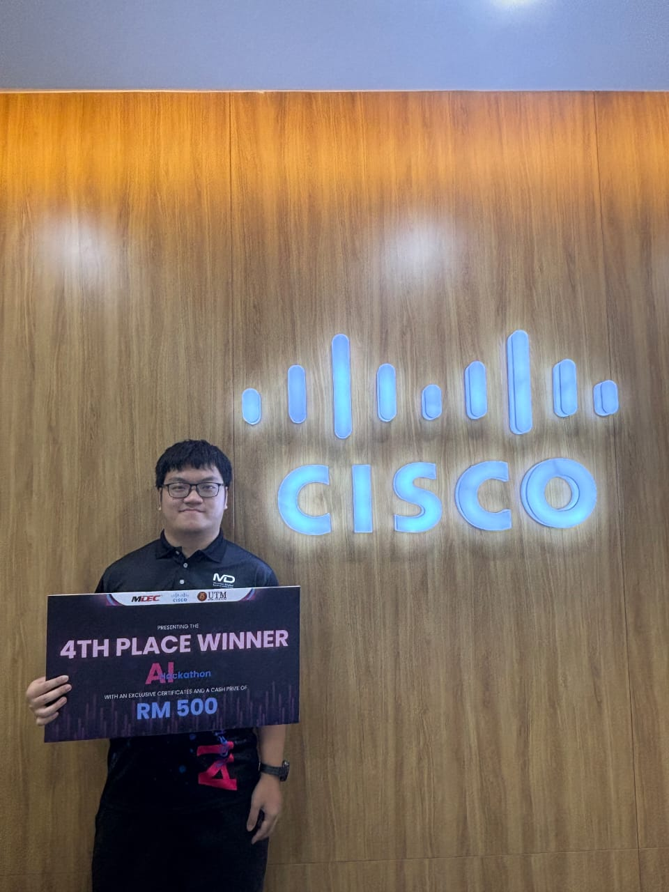

Chew Chiu Xian | Data Engineering E-Portfolio
Executive Summary
Welcome to my premium Data Engineering E-Portfolio. I am a 22-year-old Year 3 Computer Science (Data Engineering) undergraduate at Universiti Teknologi Malaysia (UTM) with a current CGPA of 3.98. Passionate about crafting robust cloud architectures, analyzing complex datasets, and deploying highly scalable data solutions, I invite you to explore my professional ecosystem and data-centric deliverables.

Technical Weaponry & Ecosystem Stack
Equipped with a versatile toolkit spanning full-stack development, distributed database architecture, and complex data engineering.
Software & Data Engineering
Frameworks, Tools & Systems
Executive Competencies
Education & Academic Trajectory
My academic foundation is built upon rigorous institutional programs and active leadership roles.
-
Universiti Teknologi Malaysia (UTM)
Year 3 Data Engineering Student (CGPA: 3.98)
Served actively as Ahli Jawatankuasa Pendaftaran for Open Day Resak. -
Kelantan Matriculation College
Pre-University Studies. Served as a Trader for the Secretariat Store / Secretariat Sukan. -
SMK Sultan Yahya Petra 1
Secondary Education Foundation.

Hackathons & Cognitive Tournaments 🏆
I thrive in high-pressure computational arenas. Here are my elite competitive milestones:
-
Project 2030: MyAI Future Hackathon | Build with AI 2026
Competed in the "Secure Digital (Fintech & Security)" track organized by Google Developer Groups (GDG) on Campus UTM; utilized cloud-based and on-device AI architectures to engineer a live validated prototype. -
4th Place | Cisco AI Hackathon 2024
Awarded for gamification algorithms solving core learning motivation drops. -
MCMC Datathon 2024
Recognized for building an agricultural decision-support engine using weather predictions to optimize crop yield pipelines. -
Data Science Digital Race (DSDR) Qualifier
Recognized status for advancing through intensive data science challenges.
Featured Enterprise Systems & Automations
Explore my top 4 enterprise-grade engineering systems and production platforms. These frameworks demonstrate my capability across full-stack development, cloud modeling, and complex data analytics.
Recoverable Assets & Inventory Risk Management Pipeline
Industry Project | Mar 2026 – June 2026
Engineered an end-to-end cloud data pipeline on Microsoft Azure to automate structural inventory ingestion. Implemented business data logic to automate obsolescence thresholds, quantify financial provisions, and generate predictive stockout risk models inside Microsoft Power BI.
Academic Advising and Progress Tracker System
Team Project | Oct 2025 – Feb 2026
Developed an enterprise web application leveraging SAP Build Apps and MySQL to eliminate data silos. Designed full end-to-end system architecture layers via UML and built a rule-based Early Warning System module to flag at-risk student profiles.
Kada Cooperative System
Team Project | Oct 2024 – Feb 2025
Deployed a secure cloud operational framework using PHP and MySQL to systematically digitize manual pen-and-paper member savings logs and automate workflow processing rules.
BioFlora Plant Identification Hub
Personal Engineering Deployment
Custom-built responsive flora metadata registry showcasing baseline modular UI styling, modern frontend layout practices, and lightning-fast delivery networks.
🗺️ Academic Curriculum & Repository Index
A comprehensive directory tracking the programmatic deliverables, architectures, and systems engineered across my 3-year undergraduate timeline:
🗓️ YEAR 1: COMPUTATIONAL LOGIC & FOUNDATIONS
- Programming Technique Core logic flows, file operations, algorithmic problem solving, and object-oriented architectures using C++.
- Digital Logic Designing physical Boolean state circuits, truth-table reduction, breadboard blueprints, and hardware gating logic.
- Discrete Structure Formal math frameworks, set operations, combinations, graph theory models, and proof structures fueling backend query performance.
- Information System & Tech (TIS) Enterprise tech topologies, hardware tear-downs, PC assembly labs, and low-fidelity Design Thinking prototyping frameworks.
- Integrity & Anti-Corruption Tech ethics compliance guidelines, anti-bribery governance laws, institutional integrity practices, and societal safety paradigms.
- BioFlora Plant Hub Interactive responsive plant taxonomy archive highlighting baseline frontend DOM practices and styling metrics.
🗓️ YEAR 2: SYSTEMS INFRASTRUCTURE & SCALED AGGREGATIONS
- Operating System Low-level process lifecycles, memory access strategies, and semaphore-based multi-thread synchronization models. (Includes my custom multi-thread Restaurant Table Management System).
- Database Systems E-R mapping diagrams, third normal form schema optimizations, transactional atomic constraints, and complex multi-join structured queries.
- Network Communication OSI layout layers, socket programming interfaces, packet routing controls, and end-to-end transport encryption workflows.
- Student Registration CRUD A standalone transactional server interface implementing standard CRUD operations to manage system persistence.
- Data Mining Algorithms Pattern evaluation, clustering paradigms, association rule extraction, classification algorithms, and high-volume data preprocessing pipelines.
- KADA Financial System Production-grade accounting ledgers and secure record management databases deployed for corporate operations.
🗓️ YEAR 3: ENTERPRISE FRAMEWORKS & ADVANCED COGNITIVE AUTOMATION
- Enterprise Systems Design (ESDM) Multi-tiered architectural scaling, microservice patterns, container isolation, and production-grade software integration blueprints.
- Advising Appointment App Real-time academic tracking system driven by UML specifications to optimize calendar throughput.
- Artificial Intelligence Heuristic search agents, machine learning regressions, neural networks, and algorithmic decision systems.
- High Performance Data Proc (HPDP) Highly parallel map-reduce architectures, cluster node orchestrations, data stream pipelines, and compute acceleration metrics.
- App Dev GENIUSAQILOS Cross-platform native compilation patterns integrating real-time user-space inputs with secure APIs.
- Special Topics in DE Next-generation big data streams, advanced architectural models, analytics frameworks, and professional capstone synthesis.
🌐 Connect on LinkedIn Professional Network
Let's collaborate, discuss production cloud architectures, or explore data pipeline engineering opportunities. View my verified professional certifications and network highlights.
Thank You For Reading My E-portfolio
The pages will be kept updated to the latest developments in the future. Stay Tuned 😊